Before the New York Public Library went up on 42nd and 5th, there was a large, militant-looking reservoir there. The Croton Reservoir. It got taken down in 1900.
Before the New York Public Library went up on 42nd and 5th, there was a large, militant-looking reservoir there. The Croton Reservoir. It got taken down in 1900.

Symphony Space is all fancy now, but back in the day it had way more character.

The world’s most powerful computer in 1954, at Columbia University. NORC. I’m sure it was way less powerful than an iPhone.

A letter of protest to shut down Studio 54, 1970s.
“The subways are crummy. And they’re dangerous.” NYC transportation in the 70s.

This is pretty much how I remember Astor Place.
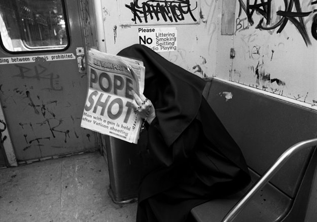
Great shot. (Pun not intended.)

Debbie Harry at Coney Island during the making of ‘Mutant Monster Beach Party’, photo by Chris Stein, 1977

Not much of a photo, but it was all I could find. This was Johnny’s – a literal hole in the wall just off 86th Street on Columbus Avenue. I have no idea how he managed to stay open and sane, but he was there for at least several years. Occasionally you could find an interesting LP there, but the book selection was crappy. He made his living mostly off of selling old issues of Penthouse.
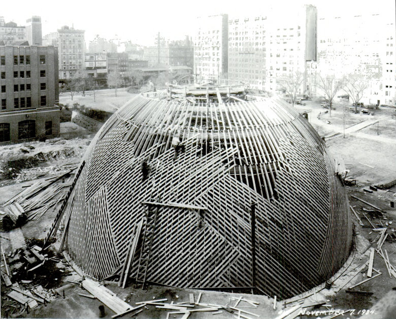
The Hayden Planetarium being built in the 1930s.

His prices were insane.
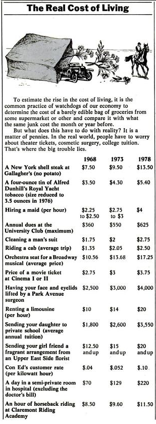
Cost of living in NYC, 1968, 1973, and 1978. I’m guessing the trend is significantly upward if one were to put 2013 on the list.

Ah, Coliseum Books. God only knows how many hours I spent crawling through the stacks there. It closed a few years ago, signaling a sad closing chapter for independent bookstores.
Google Books has page scans of New York Magazine from the 1970s through 1997!

Picking’s are slim out there for pics of the New Yorker movie theater, on 89th and Broadway. But I found these two gems. The first pic – looking uptown on the west side of Broadway – is a little before my time, but shows the sign for Lynn Oliver’s studio just above the marquis. Lynn was a great musician, and his little rehearsal studio was a hub for NYC jazz artists.
The second pic – looking downtown – shows the honorable Ed Koch in the foreground, but more importantly shows Benny’s Hot Dogs just behind Ed. The place was disgusting, and the aforementioned Benny would occasionally chase people out of his shop with a butcher’s knife, but the hot dogs were cheap and hit the spot.
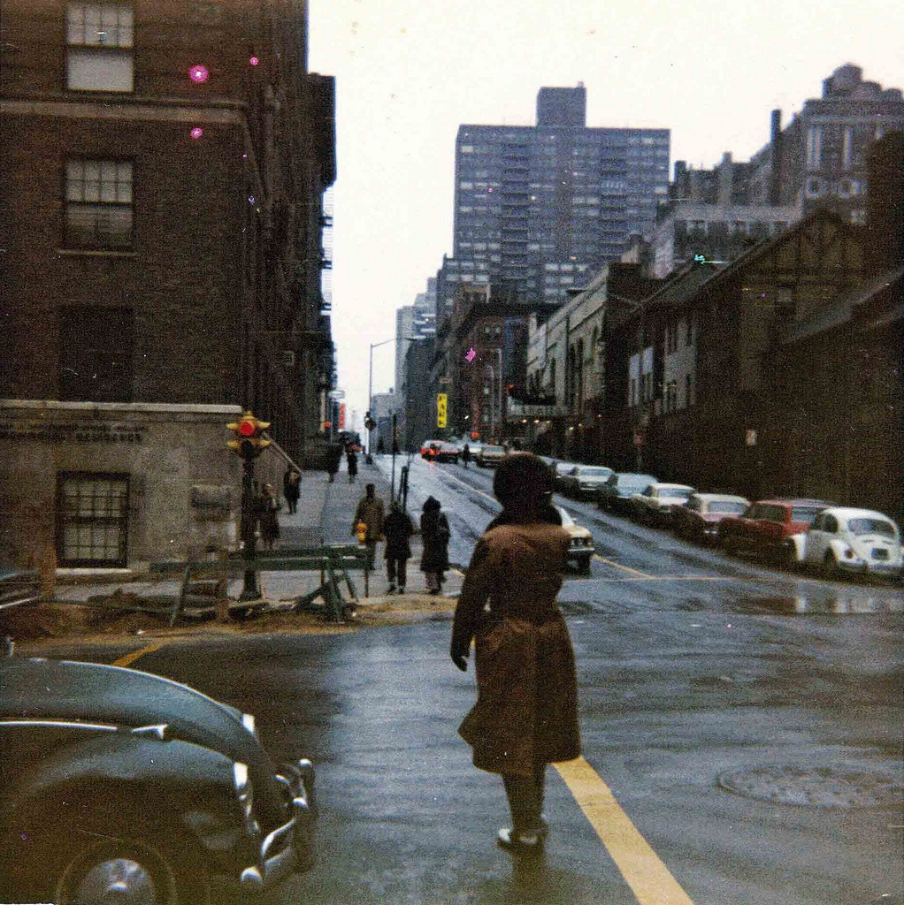
West End Avenue and 95th Street, looking East towards Broadway up the hill. You can sort of see the Thalia theater’s white marquis on the right. A great little place to watch movies off the beaten path.
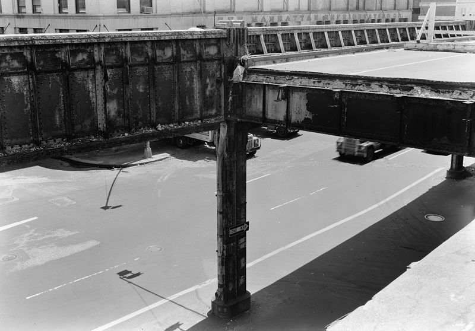
The old elevated West Side Highway where it collapsed.

The old elevated West Side Highway, with an abandoned Camaro. The highway was closed when part of it collapsed, at 14th Street.

Howard Johnson’s in Times Square, 1970s. Times Square was definitely not the tourist trap it is today, but HoJo managed to survive for a long time by overcharging non-locals.
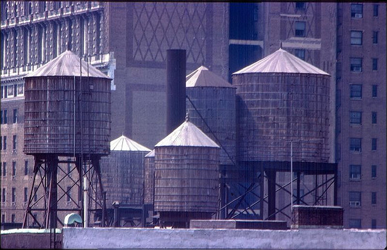
Manhattan rooftop water towers. These always baffled me a little. The idea is that if you have the water on the roof, you don’t have to pump it up to the apartments. But you have to pump the water up to the towers, and unless I’m forgetting my high school physics, that’s not really a savings of energy. But, hey, what the hell do I know?
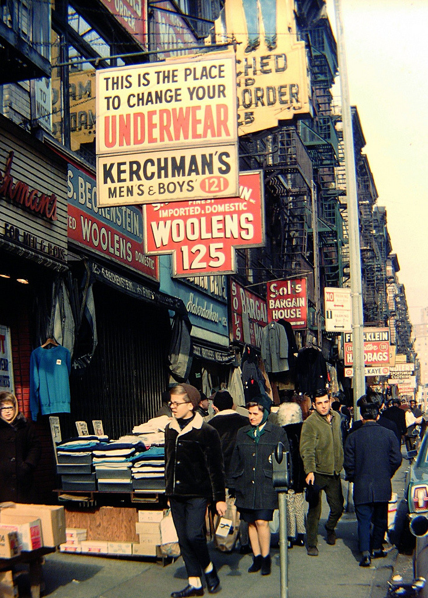
This is the place to change your underwear.

Available: Airy apartment with open floor plan. Picturesque views. Off street parking.
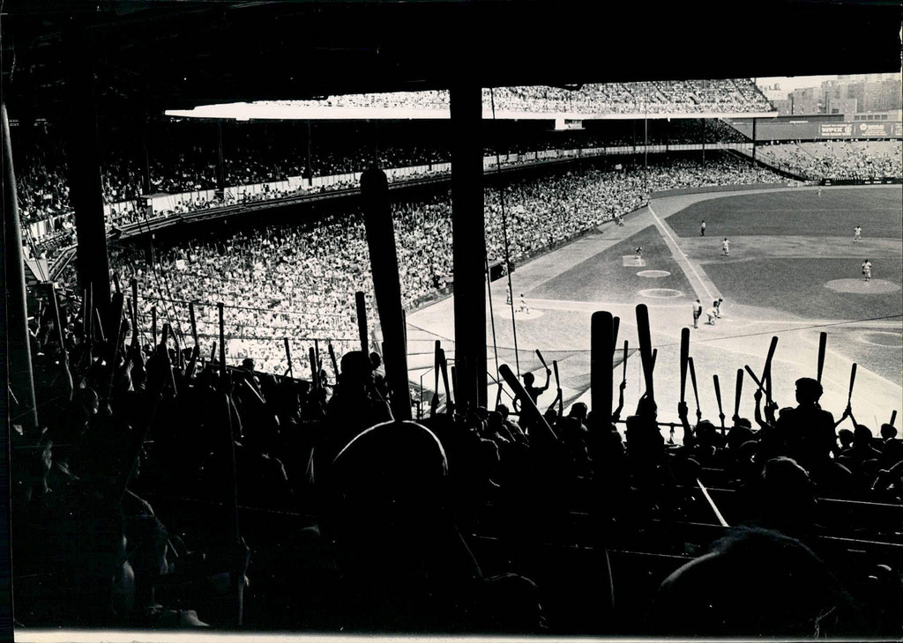
Bat Day at Yankee Stadium. How I survived my youth, I’ll never know.
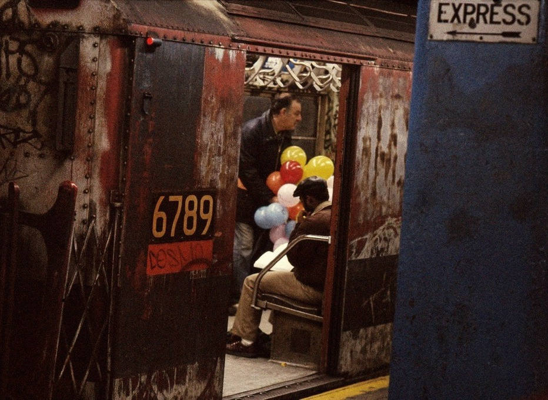
1970s subway car. With balloons. A far cry from the current-day shiny cars.

New York City, 1971
Cooled by refrigeration.

Apparently this was opening day for the World Trade Center, 1973.
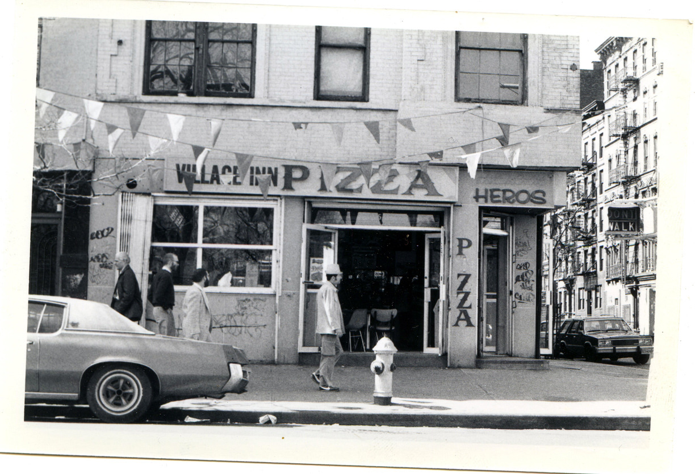
Would you eat there?

Some cool photos of Greenwich Village in the 50s, including this one proving that scooters were cool a long, long time ago.
http://www.vintag.es/2013/03/old-photos-of-greenwich-village-in-1950s.html

We had a sign like this on the outside of our apartment building. Which was odd, because a normal, unsealed, dirty, disgusting basement, isn’t where I’d imagine you’d want to try to avoid a nuclear shockwave. Of course, as a kid I had no idea what the significance of the fallout shelter was, but the sign was good for one thing: the circle around “capacity” was just about tennis-ball-sized, and so made for an excellent imaginary catcher’s mitt target. Bottom of the ninth, two out, the intrepid relief pitcher steps onto the mound…
Burger King has a long history of classiness. (The taxi blends right in.)

I had a teacher once tell me that the fact that the Circle Line bored me was indicative of me being a boring person. Agree to disagree.
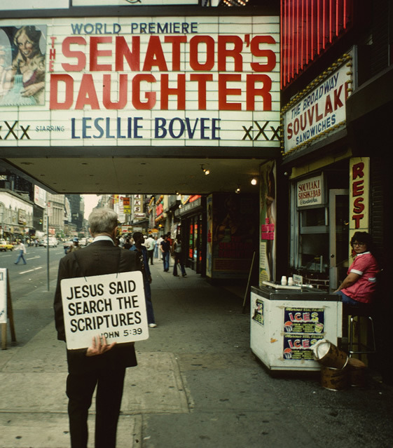
I’m no bible scholar, but I’m pretty sure Jesus never said anything about the senator’s daughter.
Nice piece on some of NYC’s subway tile designs.

My junior high school. Around the left side, I got mugged while my teacher watched on from the window.
Stuyvesant High School math team, 1980.
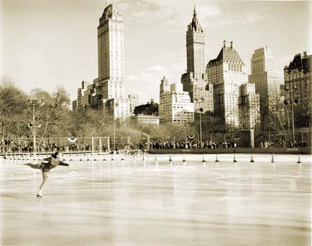
Wollman Rink in Central Park. 1960s I think.
I used to go there a lot, rent cheap skates, and beg my mom for money to buy what was most certainly the worst hot chocolate and pizza on the planet.

75 cent haircuts, 1965.

Coney Island irony.
This is a Flickr group for photos of places, people, and things THAT ARE VANISHING (or already vanished) from the city of New York. Restaurants about to close, buildings to be torn down, interesting old signage, bookstores that look like they’re on their last legs, etc.

Canal Jean. Oh, the awesome $5 used clothes you could find there!

A day in the life, 1975.

Jaywalking in 1975.
Too cool. A compilation of NYC subway scenes from 70s and 80s movies.
Soldiers and Sailors monument, Riverside Park. Used to climb up to those pillars and watch lightning storms across the Hudson.

Thanksgiving parade, 1979. Snoopy, allegedly. Balloon technology was a little sad back then.